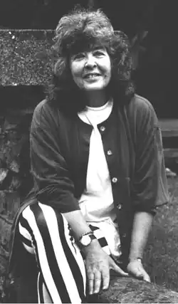

19 серпня 1934 — 26 березень 2011
Діана Вінн Джонс (англ. Diana Wynne Jones) — британська письменниця фентезі для дітей і дорослих. Народилася в Лондоні, 19 серпня 1934 року.
Коли почалася друга світова війна, Діані було п'ять років. Батьки поїхали зі столиці в Уельс, потім в Йорк і, нарешті, в 1943 році осіли в графстві Ессекс, де Майорі і Річард почали працювати в освітньому центрі. У 1953 році вступила в Оксфорд, коледж Св. Анни, де відвідувала лекції К. С. Льюїса і Джона Р. Р. Толкіна. Діана Вінн Джонс живе разом зі своїм чоловіком Джоном Барроу, професором Брістольського універститету і трьома синами в Кліфтон, Брістоль. Діана є автором понад сорока книг, перекладених на 17 мов. Володіє вражаючим списком нагород і номінацій, серед яких найпрестижніші Carnegie Medal Commended і Mythopoepic Fantasy Award. Особливою популярністю користуються цикл "Світи Крестомансі" і роман "Бродячий замок Хоула", екранізований в 2004 році відомим японським режисером аніме Хаяо Міядзакі. Англійська версія мультфільму вийшла в 2005 році. Критика до сих пір порівнює настільки гучного "Гаррі Поттера" саме з знаменитим серіалом "Світи Крестомансі", який з'явився на добрих два десятки років раніше книг Джоан К. Роулінг. Твори Джонс також часто порівнюють з книгами Робін Маккінлі і Нейла Геймана. Вона дружить з Гейманом і вони обидва є шанувальниками творів один одного. Письменниця присвятила роман Гексвуд (Hexwood) Гейманом, почерпнув ідею сюжету в одній із розмов з ним. Роман "Зачарована життя" — перший із серії про Крестомансі виграв в 1977 Guardian Award як краща книга для дітей. У 1999 році вона виграла ще дві важливі нагороди, які мають вплив в світі фентезі-літератури: нагороду за кращий твір для дітей Mythopoeic Awards в США і Karl Edward Wagner Award в Великобританії. За мотивами її книги "Ходячий замок" в 2004 році японський аніматор Хаяо Міядзакі створив мультфільм, номінований на "Оскар" як кращий анімаційний проект року. А за романом Archer's Goon в 1992 році був знятий телесеріал.